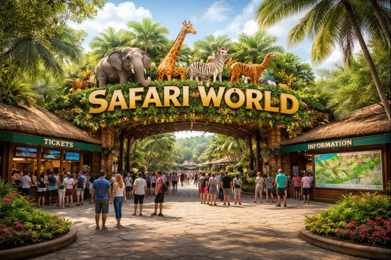
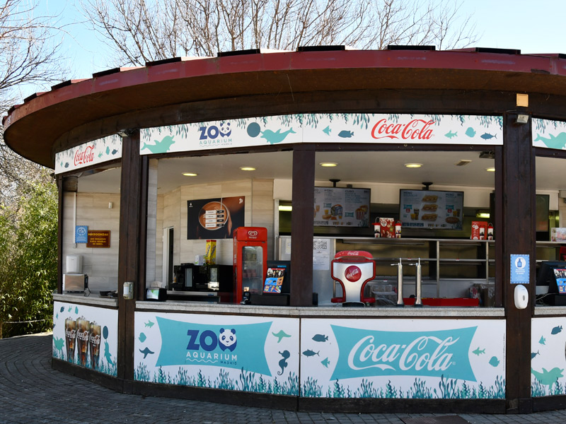

Entrée Principale du Zoo de Safari World
La visite commence à l’entrée principale du zoo, qui sert de point d’arrivée officiel pour tous les visiteurs. À cet endroit, vous pouvez :
- Acheter vos billets pour l’accès au zoo.
- Obtenir un plan imprimé du zoo pour vous orienter.
- Vous familiariser avec les principales zones à visiter sur la carte.
Cet espace d’accueil est pensé pour bien commencer l’expérience, avec une signalétique claire dès votre entrée dans le parc.
Kiosque d’Information / Village d’Accueil
Juste après l’entrée, vous trouverez le kiosque d’information et le village d’accueil, un lieu central pour :
- Poser des questions au personnel du zoo.
- Obtenir des explications sur le fonctionnement du parc et les services disponibles (aires de pique‑nique, location de poussettes ou de fauteuils roulants, etc.).
- Repérer sur la carte les services pratiques tels que les zones de restauration, les kiosques et les espaces de repos.
Cette zone sert aussi decarrefour du plan du zoo, depuis lequel partent les sentiers principaux vers les différents écosystèmes.
Zones pour voir les animaux au zoo
Le zoo est organisé en plusieurs zones thématiques où les visiteurs peuvent observer les animaux dans un cadre proche de leur habitat naturel. Parmi les espèces présentes:
- Mammifères et oiseaux :
Renard / Chauve-souris / Sanglier/Gazelle / Tatou / Ours / Condor des Andes / Faucon / Écureuil / Buffle d’Afrique
- Reptiles et amphibiens :
Salamandre / Serpent / Tortue terrestre
- Oiseaux et autres :
Oiseau Aigrette / Aigle / Calao terrestre du Sud / Canard / Manchot / Pie-grièche